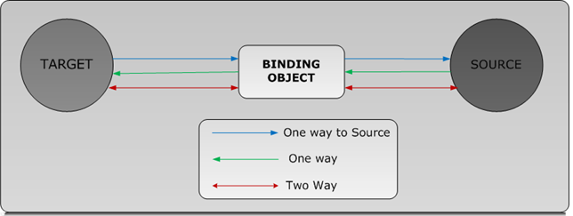

Data-binding is een verbinding tussen je graphical user interface en je bedrijfslogica. WPF bevat een aantal componenten die je kunt instellen om XAML elementen de waarde van een model te laten reflecteren. Als een property van het model verandert, veranderen alle XAML elementen met een binding op die property mee.
In de voorbeelden van XAML code in het vorige blok, werd getoond dat je de XAML elementen via C# code kan bereiken en eventuele waardes of collecties kan aanpassen. De verantwoordelijkheid om de veranderingen op het model door te voeren in de view, moet losgekopppeld worden van de bedrijfslogica. Data-binding is hier de perfecte oplossing voor.
We hebben een aantal dingen nodig om data-binding aan de praat te krijgen.
public class TemperatureVM{
private double _temperature;
}
<Label Content="The temperature is"/> <Label>Hier wil ik de temperatuur hebben</Label>
Eerst moeten we de view vertellen op wat voor model hij zijn waardes kan baseren. Dit doen we met de Window.DataContext property. Hiermee kunnen we aangeven welke data onze view gaat gebruiken. Er zijn twee manieren om dit te realiseren.
<Window.DataContext>
<local:TemperatureVM />
</Window.DataContext>
public MainWindow()
{
InitializeComponent();
DataContext = new TemperatureVM();
}
Als laatste stap moeten we in het Model een Public Property maken die voldoet aan de eisen van het WPF data-binding framework. Daarnaast moeten we een referentie vanuit de view naar deze property leggen.
Om te voldoen aan de eisen van WPF moeten we van ons model (wat op dit moment al een view model is ) laten overerven van het interface INotifyPropertyChanged. Dit geeft ons toegang tot de data-binding eigenschappen van WPF.
Voor ieder property op je model zul je moeten aangeven dat de waarde gewijzigd is. Hierdoor zal automatisch de view geüpdatet worden. Het aangeven van een wijziging doe je via het event RaisePropertyChanged. De meegegeven naam moet overeenkomen met de naam die je hebt aangegeven in je XAML element.
Het RaisePropertyChanged event gaat op zoek naar alle XAML elementen die een binding hebben openstaan met de meegegeven property. Om deze reden moet er ook een null check aanwezig zijn. Het kan namelijk zo zijn dat er geen enkel element 'gebind' is aan de gewijzigde property. Je hoeft deze event handler maar 1x aan te maken, en je hier verder geen zorgen over te maken.
Als nu de waardes op het model veranderen, verandert de view automatisch mee. Vanaf dit punt is het dus ook heel makkelijk om bijvoorbeeld een textveld toe te voegen waar de gebruiker de waarde van de temperatuur kan aanpassen. Je hoeft alleen in het XAML element aan te geven dat je de waarde van het textveld wilt data-binden aan de temperatuur.
<Label Content="The temperature is"/>
<Label Content="{Binding Temperature}"></Label>
public class TemperatureVM : INotifyPropertyChanged
{
private double _temperature;
public double Temperature
{
get { return _temperature; }
set
{
_temperature = value;
RaisePropertyChanged("Temperature");
}
}
#region INotifyPropertyChanged Members
void RaisePropertyChanged(string prop)
{
if (PropertyChanged != null) { PropertyChanged(this, new PropertyChangedEventArgs(prop)); }
}
public event PropertyChangedEventHandler PropertyChanged;
#endregion
}